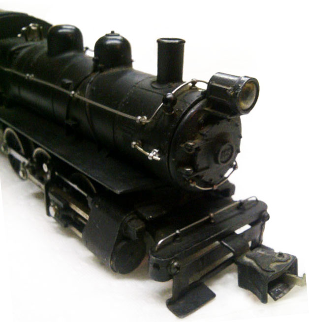

Why a Website for a Lowly Switcher?
The time has finally come for the hard-working locomotive to get it's due. Long overlooked and seldom appreciated it was the workhorse of many real railroads. Fortunately, Lionel realized the appeal of this engine just prior World War II.
Lionel in the late 1930's, tried to design more realism into their toy trains. As a result, the 700E Scale Hudson was introduced in 1937. Some consider that to be the finest locomotive Lionel ever produced. By 1939-1940, the scale and semi-scale steam switchers were introduced by Lionel. They were based on the Pennsylvania Railroad's B-6 class of switchers with their distinctive slope-back tenders which were meant to increase crew visibility on the prototype.
The Lionel Pre-War switchers can be found nowadays at train shows and through online auctions, including eBay. Most are easy to get running even if they arrive inoperable. A little cleaning of the wheels, rollers and motor can bring 99.9% of these beauties back to life.